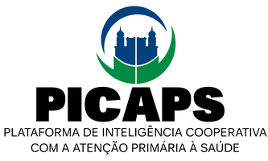
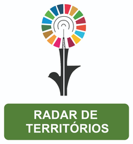
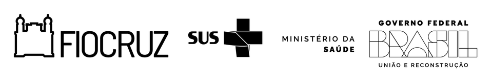

Conhecer para fortalecer.
Dialogar para transformar.



| Data | Dia | Início | Término | Território | Local | Endereço | Agente | Contato | Parceria |
|---|
Quanto de cada etapa chega à seguinte
1. Inscritas
—
início da formação
2. Qualificadas
—
— das inscritas
3. Agentes populares
—
— das qualificadas
4. Multiplicados
—
cerca de — pessoas por agente
Os dois ciclos do projeto e a pausa entre eles
Encontros com parceria, por instituição (pergunta existe desde abr/2026)
Bolha maior = mais encontros · posição aproximada de cada região administrativa
Manhã: antes das 12h · Tarde: 12h às 18h · Noite: depois das 18h
Encontros: respostas do formulário de agendamento dos Agentes Populares de Economia Solidária. São — encontros registrados; a resposta mais recente foi enviada em —. Respostas de teste e datas impossíveis ficam de fora.
Nomes, telefones e endereços aparecem com autorização dos agentes, para consulta pública do território.
Agentes, qualificadas, inscritas, multiplicados, participantes e locais visitados vêm dos indicadores do projeto.